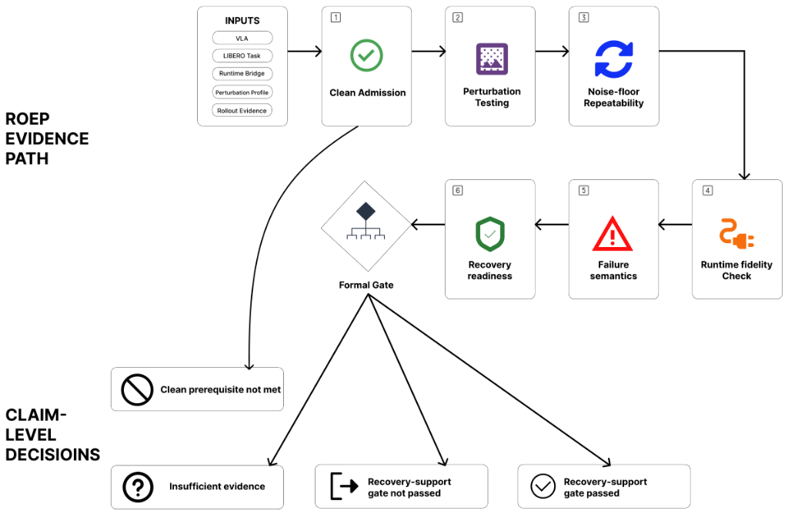

|
Sangwoo Han I am an undergraduate student majoring in Artificial Intelligence Software at Cheongju University and an undergraduate researcher at VICA Lab (advised by Prof. Hyunguk Choi). Currently, I am working as a visiting research intern at ROBIN Lab in DGIST, advised by Prof. Yongseok Lee. |

|
Research InterestsMy ultimate research goal is to build intelligent robotic agents that can operate robustly, adaptively, and autonomously in complex, real-world environments.
|
Publications |
|
 |
ROEP: A Robotics-Oriented Evaluation Protocol for Deployment-Facing Vision-Language-Action Manipulation Policies
Sangwoo Han, Hyunguk Choi† Sensors, 2026, 26(15), 4757 paper (DOI) In this work, we propose a robotics-oriented evaluation protocol (ROEP) designed to systematically assess deployment-facing Vision-Language-Action (VLA) manipulation policies under real-world perturbations and operational conditions. |
Projects |
| Nov 2025 – Feb 2026 |
Information Extraction and Analysis for Manufacturing Process Efficiency
Chungbuk RISE Center · KRW 100M · Kukje Electric Co., Ltd. PI: Hyunguk Choi · Team: Gihun Kim, Jiwoo Park, Sangwoo Han, Jiwoo Hong |
| Oct 2025 – Jan 2026 |
AI for Hard-Copy Digitization in Intelligent Video Conferencing
SW-Centered University Program · KRW 6.3M · Gooroomee Inc. PI: Hyunguk Choi · Team: Gihun Kim, Eunseong Kim, Jiwoo Park, Sangwoo Han, Jiwoo Hong |
Patent & Technology Transfer |
| Feb 25, 2026 |
Method for Analyzing Process History Data
Korean Patent Application No. 10-2026-0034909 Hyunguk Choi, Gihun Kim, Jiwoo Park, Sangwoo Han, Jiwoo Hong |
| Feb 12, 2026 |
Manufacturing Process Efficiency: Technology and Know-How Transfer
Transferred to Kukje Electric Co., Ltd. Hyunguk Choi, Gihun Kim, Jiwoo Park, Sangwoo Han, Jiwoo Hong |
Experience |
| Present |
Visiting Research Intern — ROBIN Lab, DGIST
Advised by Prof. Yongseok Lee
• Configured physical & software experimental environments for the lab. |
| Present |
Undergraduate Researcher — VICA Lab, Cheongju University
Advised by Prof. Hyunguk Choi
• Participated in 2 industry-academic collaboration projects. |
"Loading Kanye quote..." Powered by kanye.rest |
|
Design template based on Jon Barron's website. |